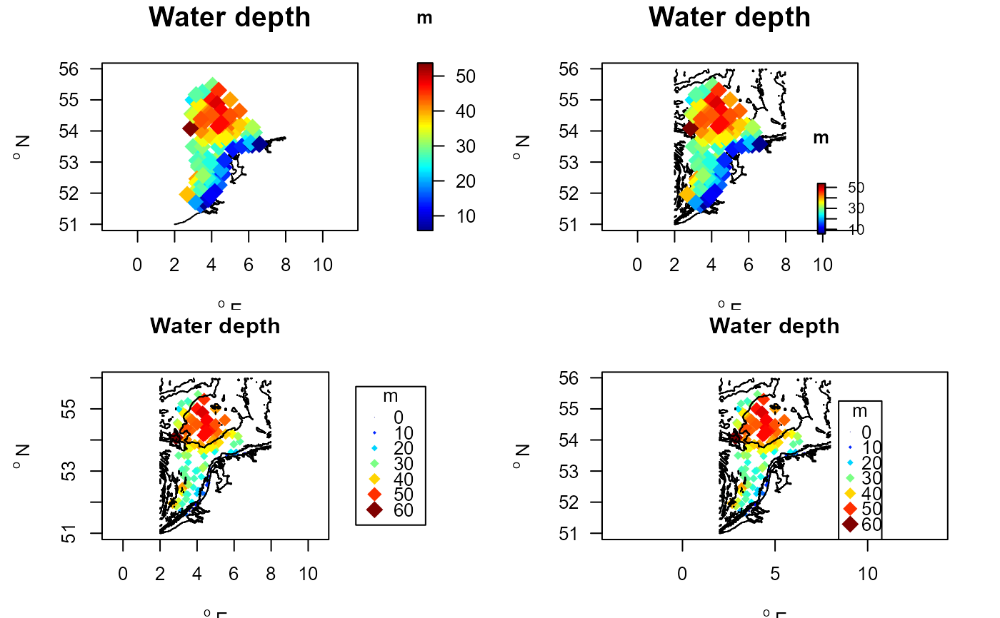
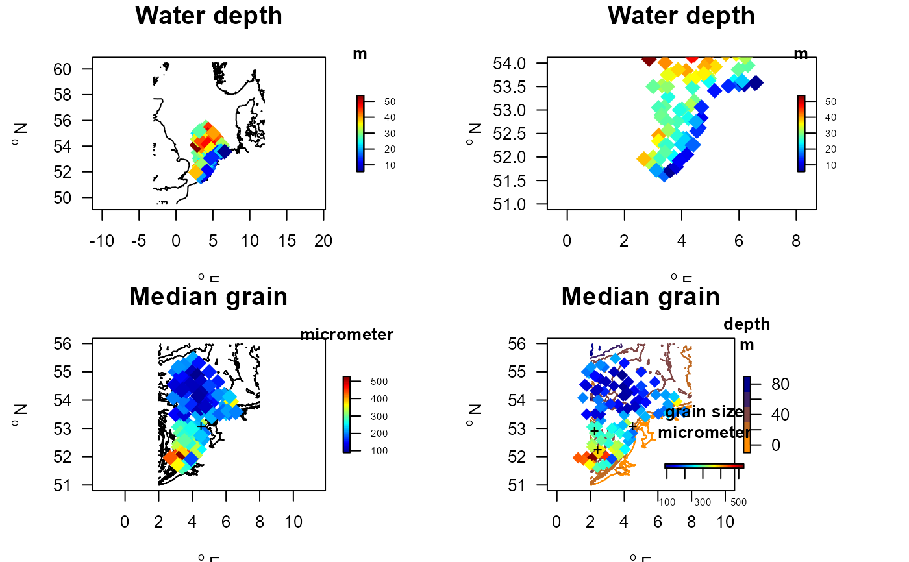
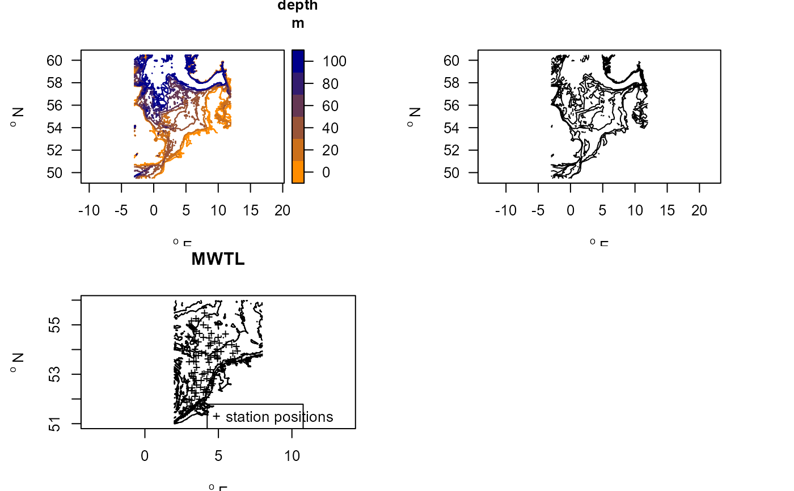
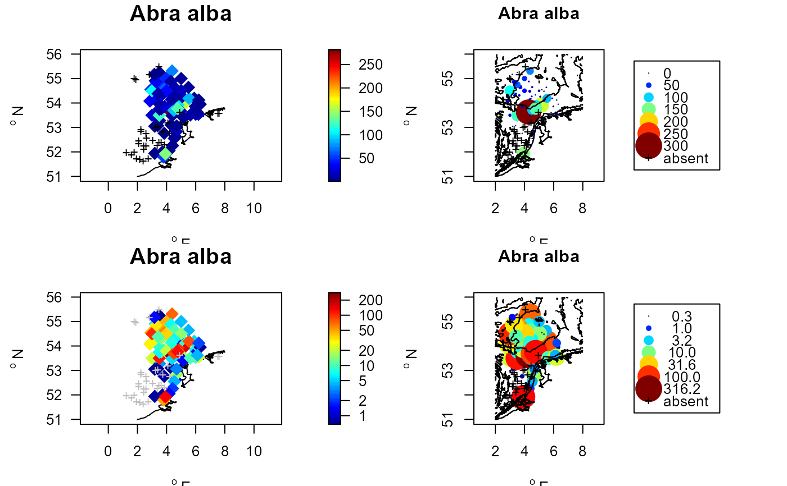
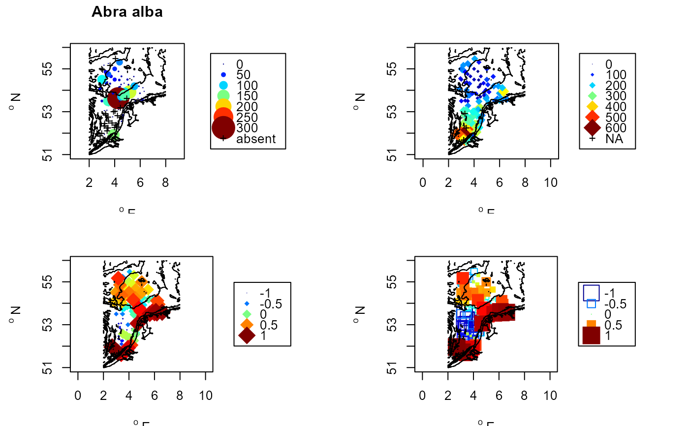
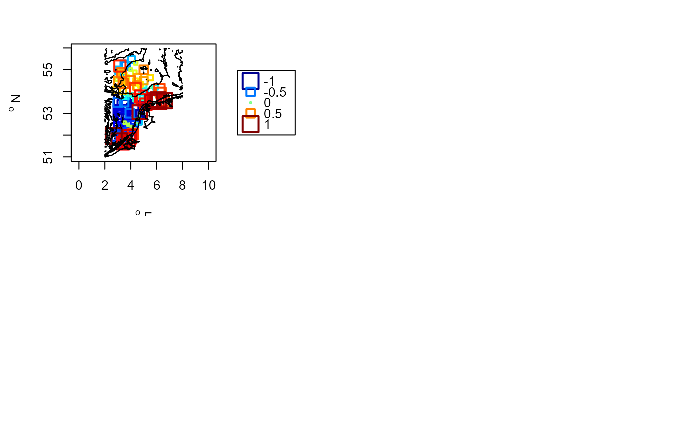

BtraitMap.Rdmap_key: plots contourlines of the dataset with colored data as points superimposed; a colorkey explains the colors
map_legend: plots contourlines of the dataset with colored data superimposed; point size depends on data value; a legend explains the colors and sizes
map_MWTL and map_NSBS are convenience functions for plotting the MWTL and NSBS data sets.
map_key (x = NULL, y = NULL, colvar = NULL,
main = NULL, col = NULL, lwd = 1,
colkey = list(), xlim = NULL, ylim = NULL, clim = NULL,
contours = NULL, draw.levels = FALSE, col.levels = "black",
by.levels=1, key.levels = FALSE, lwd.levels = 1, axes = TRUE,
frame.plot = TRUE, asp = NULL, NApch = 43, ...)
map_legend (x = NULL, y = NULL, colvar = NULL,
main = NULL, col = NULL, lwd = 1,
legend = list(), xlim = NULL, ylim = NULL, clim = NULL,
scale = "simple", pch = 18, cex = 3, cex.min = cex/20,
contours = NULL, draw.levels = FALSE, col.levels = "black",
by.levels=1, key.levels = FALSE, lwd.levels = 1, axes = TRUE,
frame.plot = TRUE, asp = NULL, NApch = 43, NAtext = "NA", ...)
map_MWTL(x = NULL, y = NULL, colvar = NULL,
draw.levels = TRUE, type = "key", ...)
map_NSBS(x = NULL, y = NULL, colvar = NULL,
draw.levels = TRUE, type = "key", ...)coordinates of the points to plot.
color variable.
The colors used for the color variable. A vector; the default is jet.col(100).
specifications for the color key. See colkey.
specifications for the legend. Arguments as passed to legend.
Also allowed are side, cex, pars that will be passed to legend.plt as
legend.side, legend.cex and legend.pars respectively.
title of the plot.
aspect ratio of the plot. If NULL, it will be estimated from the mean of the y-values, assuming these are latitudes.
ranges of the plot. When asp=NULL, the ranges will be only approximate, as the actual ranges are tuned by the aspect ratio, which is estimated from y.
range of the color variable values.
how to scale the size of the points, one of "simple", "abs" or "none", for scaling with the value, the absolute value or no scaling respectively.
the type of points to use; one value. If scale = "abs", a vector with two pch numbers is also allowed, first for the positive values, second pch for the negative values.
the line width of the points to use; one value.
maximum and minimum value of the pch size - cex.min will be ignored if scale = "none".
A list with x, y, and z that
specifies the contours. Usually, z is the water depth.
Whether or not the depth levels should be added;
if FALSE only contour levels that are >= 0 will be added.
Colors of the depth levels (only applicable if draw.levels=TRUE); the default is to have grey colors. Also allowed is a function that takes as input the number of colors - see last example.
if levels need to be represented with less detail, set by.levels>1. This will speed up plotting. Only effective if contours is passed.
The line width of the depth contour lines.
Whether to add a color key with the depth levels; only applicable if draw.levels=TRUE).
This can be TRUE or FALSE, or a list that specifies the color key (see colkey).
arguments to the main plotting function (that opens a window).
additional arguments passed to - for map_key- the plot function *points2D*, e.g. the type of symbol to use (pch, cex, ...), or whether to use log-transformed color variables (log="c").
either "key" of "legend", so as to calle map_key or map_legend.
pch of the NA colvar, and the text in the legend. Note that, if pch is numeric, then also NApch should be numeric; NApch = 43 will draw a "+"","
returns nothing
These are simple plotting functions, and there may be better alternatives around.
If asp=NULL, then, to scale the x- and y-axis, the aspect ratio is estimated as: asp = 1/ cos((mean(ylim) * pi)/180).
## MWTL data
MWTLabiotics <- merge(MWTL$stations, MWTL$abiotics)
# =========================================
# 4 times the same data plotted
# =========================================
par (mfrow=c(2,2))
with (MWTLabiotics,
map_key(x, y, colvar = depth,
contours = MWTL$contours,
clab = "m", main = "Water depth",
pch = 18, cex = 2))
with (MWTLabiotics,
map_MWTL(x, y, colvar = depth,
clab = "m", main = "Water depth",
pch = 18, cex = 2))
with (MWTLabiotics,
map_legend(x, y, colvar = depth,
contours = MWTL$contours,
clab = "m", main = "Water depth",
pch = 18, cex = 2))
with (MWTLabiotics,
map_MWTL(x, y, colvar = depth,
clab = "m", main = "Water depth",
type = "legend", pch = 18, cex = 2))

# =========================================
# Change the colorkey and the contours
# =========================================
with (MWTLabiotics,
map_key(x, y, colvar = depth, contours = NSBS$contours,
clab = "m", main = "Water depth",
colkey = list(dist = -0.05, length = 0.5,
width = 0.5, cex.axis = 0.6),
pch = 18, cex=2))
# zoom in on an area (not full control due to the overruling aspect ratio)
with (MWTLabiotics,
map_key(x, y , colvar = depth,
clab = "m", main = "Water depth",
ylim = c(51, 54), xlim = c(3,5),
colkey = list(dist = -0.08, length = 0.5,
width = 0.5, cex.axis = 0.6),
pch = 18, cex = 2))
#> Warning: no non-missing arguments to min; returning Inf
#> Warning: no non-missing arguments to max; returning -Inf
# adding also the contours
with (MWTLabiotics,
map_key(x, y, colvar = D50, contours = MWTL$contours,
clab = "micrometer", main = "Median grain",
draw.levels = TRUE,
colkey = list(dist = -0.08, length = 0.5,
width = 0.5, cex.axis = 0.6),
pch = 18, cex = 2))
# adding also the contours with color key
# note: - main color key then positioned elsewhere (side=1)
# Use a different color scheme
collev <- function(n)
ramp.col(col = c("darkorange", "darkblue"), n = n)
# Change the appearance of the colorkey for levels:
with (MWTLabiotics,
map_key(x, y, colvar = D50, contours=MWTL$contours,
clab = c("grain size", "micrometer"), main = "Median grain",
draw.levels = TRUE, key.levels = list(length = 0.5, width = 0.5),
col.levels = collev,
colkey = list(side = 1, dist = -0.08, length = 0.25,
width = 0.5, cex.axis = 0.6),
pch = 18, cex = 1.5))

# =========================================
# Show the depth contours only
# =========================================
map_key(contours = NSBS$contours,
draw.levels = TRUE, key.levels = TRUE, col.levels = collev)
# less detail
map_key(contours = NSBS$contours,
draw.levels = TRUE, key.levels = FALSE, by.levels = 10)
# depth contours with station postions
with (MWTLabiotics,
map_legend(x, y, colvar = rep(NA, times = length(x)),
contours = MWTL$contours, draw.levels = TRUE,
main = "MWTL", NApch = "+", NAtext = "station positions",
legend = list(side=0, x = "bottomright")))
#------------------------------
# log-transformed color variables
#------------------------------
# average densities of Abra alba in the MWTL data.
A.alba <- get_density(data = MWTL$density,
descriptor = station,
averageOver = year,
taxon = taxon,
value = density,
subset = taxon == "Abra alba")
# add positions of stations
# all.x=TRUE: also stations without A.alba are selected
# the NAs are converted to 0
A.alba <- merge(MWTL$stations, A.alba,
by = 1, all.x = TRUE)
A.alba$value[which(is.na(A.alba$density))] <- 0
# plot with density values log-transfored
# 0-values will be transformed to NAs in map_key;
# we set the NA color="grey"
par(mfrow = c(2, 2))

map_key (A.alba$x, A.alba$y, colvar = A.alba$density,
main = "Abra alba",
contours = MWTL$contours,
cex = 2, pch = 18)
map_legend(A.alba$x, A.alba$y, colvar = A.alba$density,
main = "Abra alba",
contours = MWTL$contours,
NAtext = "absent",
cex = 4, pch = 16)
# log transformation converts 0 values into NAs
map_key (A.alba$x, A.alba$y, colvar = A.alba$density,
main = "Abra alba",
contours = MWTL$contours, NAcol = "grey", log = "c",
cex = 2, pch = 18)
map_legend(A.alba$x, A.alba$y, colvar = A.alba$density,
main = "Abra alba",
contours = MWTL$contours, NAtext = "absent",
log = "c", cex = 4, pch = 16)

A.alba$value[A.alba$value==0] <- NA
map_legend(A.alba$x, A.alba$y, colvar = A.alba$density,
main = "Abra alba",
contours = MWTL$contours, NAtext = "absent",
cex = 4, pch = 16)
#------------------------------
# mappng with Legend
#------------------------------
DD <- merge(MWTL$stations, MWTL$abiotics)
with(DD, map_legend(x, y, colvar = D50,
contours = MWTL$contours))
with(DD, map_legend(x, y, colvar = seq(-1, 1, len = nrow(DD)),
contours = MWTL$contours))
with(DD, map_legend(x, y, colvar = seq(-1, 1, len = nrow(DD)),
scale = "abs",
contours = MWTL$contours,
pch = c(15, 22)))

with(DD, map_legend(x, y, colvar = seq(-1, 1, len = nrow(DD)),
scale = "abs",
contours = MWTL$contours, clab = "TRY",
legend = list(title.col="red"),
pch = 22, lwd = 2))
